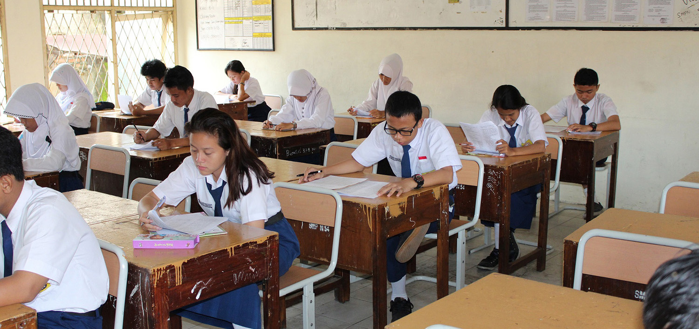
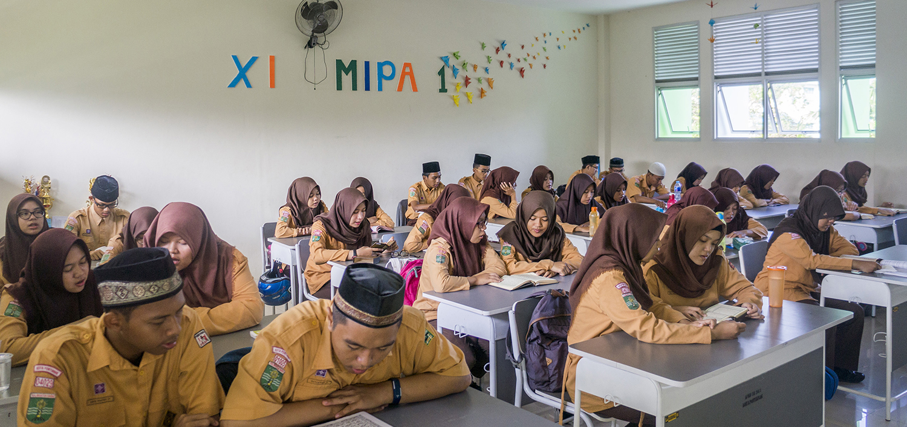

Selamat Datang di SOLATIS
Silahkan pilih Kelas dibagian navigasi atas ya :).

Website Materi Sekolah Gratis
Silahkan pilih Kelas dibagian navigasi atas ya :).

Disini kalian bisa belajar dengan gratis-tis tanpa ribet berlangganan
Silahkan pilih Kelas dibagian navigasi atas ya :).